| Google Desktop Sidebar UI Standards |
For Users
Download Plug-ins
Desktop Search Forum
For Developers
Plug-in Development
Download SDK
Developer Guide
Index API
Query API
Display API
Script API
Communication API
Plug-in UI Guidelines
Plug-in Design Guidelines
Plug-in Tutorials
Using Wizard
Using Helper Framework
Using ActiveX
Action API
Event API
Plug-in Installer
Submit Software
Developer Forum
Desktop Blog
Overview
Mouse Input
Display
Graphics and Icons
Colors
Text
Formatting and Layout
Following these UI standards will better integrate your tile with the rest of the Sidebar. Also, by improving your tile's UI, more users will want to use it and keep it open on their Sidebar.
To start with, keep these general principles in mind:
- Keep it simple, clean, and minimal.
Sidebar real estate is very limited, so only use what space you really need to display your information. Simple color palettes provide a clearer display and minimize esthetic conflicts with other tiles. - Test ease of use during development.
Have others use your tile as you develop its features. Rethink UI aspects they find confusing or difficult to use.
Mouse Input
Since users interact with most tiles via the mouse, mouse input related UI should be consistent throughout the Sidebar to avoid confusion. The follow visual cues tell users what sort of clicks the three main tile element types support.
- Items: Show the tile's main content, such as articles
in the news tile.
- Single-click selects an item and opens its detail
view.
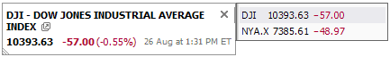 - Double-click opens the item in a new application window and also selects it in the Sidebar.
- Mouseover temporarily highlights the item.
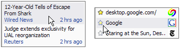
- Single-click selects an item and opens its detail
view.
- Widgets: Do something when clicked, such
as buttons, checkboxes, stars, etc..
- Single-click only! We reserve double-clicks for opening items.
- Mouseover and mouseclick states look different than normal states.
- Should look clickable, such as using a graphic with 3D shading.
- Text also serving as a widget should, to differentiate it
from normal text:
- Display an icon next to the clickable text (see the Remove button example below).
- Have its mouseover state look clickable or buttonlike.
- Widgets are not items or part of items. Clicking a widget should not open an item's detail view.
- Create the same button look and feel throughout the Sidebar
by using the supported
DrawItemBackground(set with different flags) on your text and graphics. - Widget examples:
normal state mouseover mouse click checkbox
(todo panel)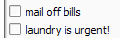 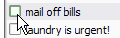 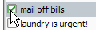 remove button
(details view)
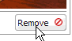 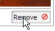
- Status Indicators: Icons or graphics that show
secondary information.
- If part of an item, they inherit all the item's mouse behaviors
- The graphic should not change on mouseover or mouseclick since they generally are not clickable.
- Status examples (after-hours moon, network activity, weather clouds):
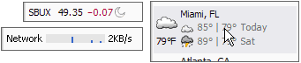
Display
Graphics and Icons
- You must provide an icon for your plug-in in 2 sizes.
-
12x12 pixels: appears in the tile's title bar
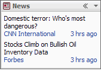 -
32x32 pixels: appears in the About this plug-in dialog and
in the Alerts UI (if supported by your plug-in).

-
12x12 pixels: appears in the tile's title bar
- Icons in the tile should be 12x12 pixels. Use a simple shape and color palette due to the small size and to help people identify the tile quickly.
- The following set of 12x12 icons are used in the default set of Sidebar tiles.
You should match your icons' style to these, which have simple rounded shapes
and mostly consist of shades of a single main color. The image
itself is a flat 2D representation of what's in the tile. Each
has a 1-pixel border in a shade of its main color.
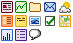
Colors
- Use colors sparingly. If a shade of gray would work instead, use that.
- Don't use colors that are too bright, or combinations that are
very high or low in contrast. Try to avoid causing eyestrain. For
example, the left image shows good color usage, while the one
on the right is harder to read.
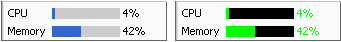 - Don't rely only on color to indicate differences, since this
can cause problems for your colorblind users. This example
indicates stock price change directions both by color
(red/green) and by text (+/-).
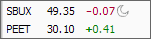
Text
- The user-specified system font and font size is also used by the Sidebar for its text display.
- Normal text is black, while less important text is colored navy [#224499 or rgb(34, 68, 153)] or gray [#666666 or rgb(102, 102, 102)].
- Avoid bolded text, if possible, as it stands out too much from the rest of the Sidebar.
Formatting and Layout
Sidebar tiles can have four different views; regular, minimized, expanded, and detailed.
- Regular view: Normal appearance.
If you have a list of items, such as web clips, you can use the API-provided list layout. If displaying only one item, such as a photo, use a one-item list layout. Your tile's purpose should be clear just from looking at this view's contents.
Keep in mind that you can show more or less information depending on the Sidebar's width. You should avoid scrollbars when possible and use an item's expanded view instead.
Try to clearly and visually represent what kind of item it is. For example, file items should have the filetype icon next to the name. Summaries of a larger body of text, such as emails or webpages, should display the title as the first line along with brief details of the item's source and date.
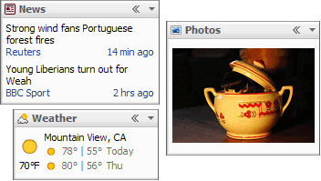
- Minimized view: Just the title bar.
Normally, the title bar simply displays your tile's icon and title. Instead of the title, you can also have it show a rotating one-at-a-time display of abbreviated items from the tile, such as your stocks and their prices.
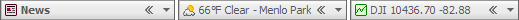
- Expanded view: Fully maximized view appearing beside
the Sidebar.
Usually used to display the full list of all tile items, with a vertical scroll bar available if there are many items to display.
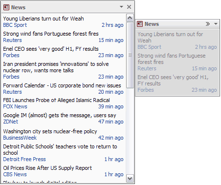 - Details view: Details of a particular tile item.
This view can be launched from a tile's regular or expanded views by single-clicking an item and should show as much information as possible.
Clicking on an item's title launches it in a relevant application, such as a webpage opening in a browser.
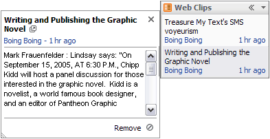 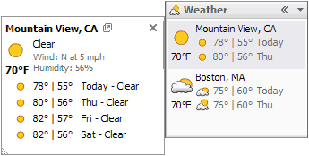